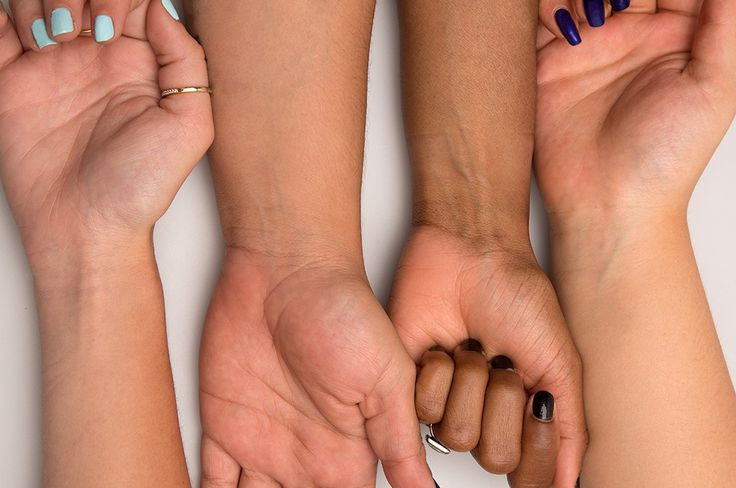

Tips & Trik Skincare 💜

Tips Memilih Sunscreen

Cara Tahu Jenis Kulit

Tips Merawat Kulit dari Dalam

Cara Tahu Undertone Kulit

Simple Skincare Pagi Ala Aku

Tips Blush On Tahan Lama

Tips Balance Makeup Anti Menor